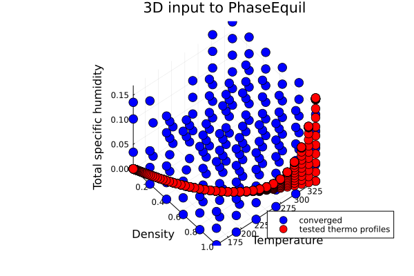
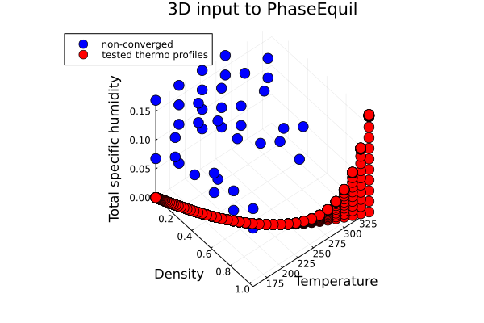
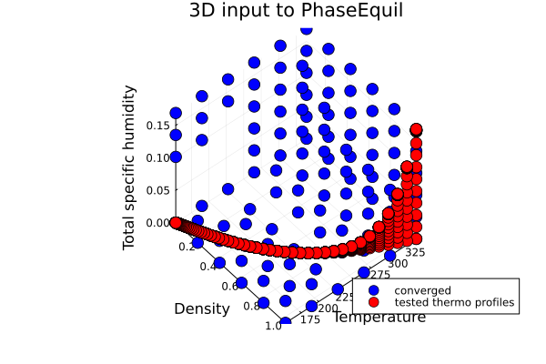
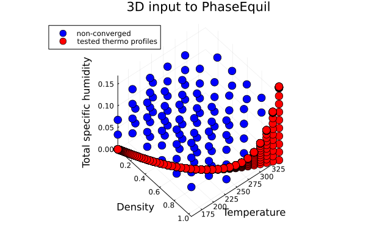
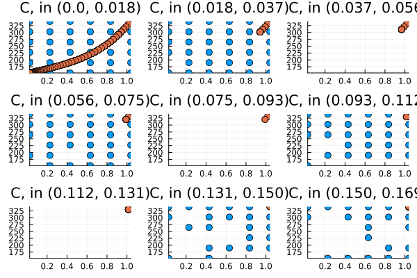
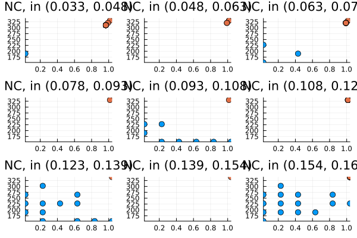
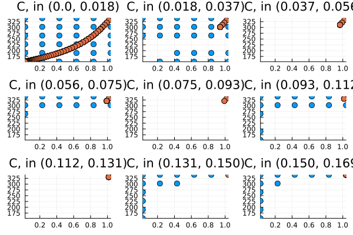
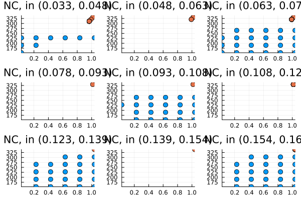

Saturation Adjustment Convergence Testing
Overview
The saturation adjustment procedure requires solving a non-linear equation to find the temperature that satisfies thermodynamic equilibrium conditions. This document describes the convergence testing framework used to validate the robustness of different numerical methods across the input parameter space.
Purpose
While the Tested Profiles section shows physically meaningful thermodynamic states, this section explores convergence behavior across a broader parameter space. We test all permutations of inputs within given ranges of density ($\rho$), internal energy ($e_{int}$), and total specific humidity ($q_t$), including combinations that may not be physically meaningful but help identify the boundaries where convergence fails.
This testing framework is dedicated to monitoring and improving the performance and robustness of various numerical methods in solving saturation adjustment equations.
The dims parameter in docs/src/saturation_adjustment.jl is currently set to dims = (6, 6, 6) to avoid heavy computations during documentation builds. For higher resolution testing, increase it to dims = (10, 10, 10) or higher when running locally.
Convergence Maps
3D Parameter Space
The following maps show convergence behavior across the full 3D parameter space:
| Numerical Method | Converged Cases | Non-converged Cases |
|---|---|---|
| SecantMethod |  |  |
| NewtonsMethod |  |  |
2D Slices by Total Specific Humidity
These maps show convergence behavior in 2D slices, binned by total specific humidity:
| Numerical Method | Converged Cases | Non-converged Cases |
|---|---|---|
| SecantMethod |  |  |
| NewtonsMethod |  |  |
Implementation
The convergence testing is implemented in the following code:
include("saturation_adjustment.jl")Convergence percentages:
RootSolvers.SecantMethod = 0.8101851851851852
RootSolvers.NewtonsMethod = 0.5370370370370371Interpretation
- Converged regions (green/blue areas) indicate parameter combinations where the numerical method successfully finds a solution
- Non-converged regions (red areas) indicate parameter combinations where the method fails to converge
- Boundary regions help identify the robustness limits of each numerical method
- Physical relevance should be considered when interpreting results - some non-converged regions may correspond to unphysical parameter combinations
Numerical Methods Tested
- SecantMethod: A derivative-free method that uses finite differences to approximate derivatives
- NewtonsMethod: Uses analytical derivatives for potentially faster convergence
Usage Guidelines
- Use these maps to understand the convergence characteristics of different numerical methods
- Consider the trade-offs between robustness (SecantMethod) and efficiency (NewtonsMethod)
- The tested parameter ranges should cover your expected simulation conditions
- For production use, ensure your parameter combinations fall within well-converged regions